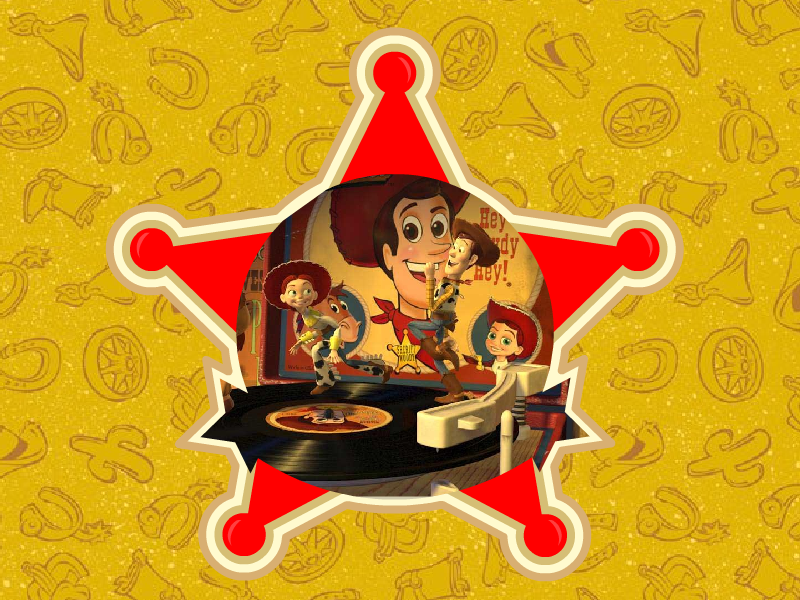

Toy Story Screensavers

Toy Story Screensaver

DOWNLOAD
 .exe file zipped (1.26 MB)
.exe file zipped (1.26 MB)
Toy Story 2 Screensaver

Note: This is a 16-bit program and requires special programs to install on 64-bit Windows, such as otvdm.
DOWNLOAD
.exe file zipped (1.58 MB)